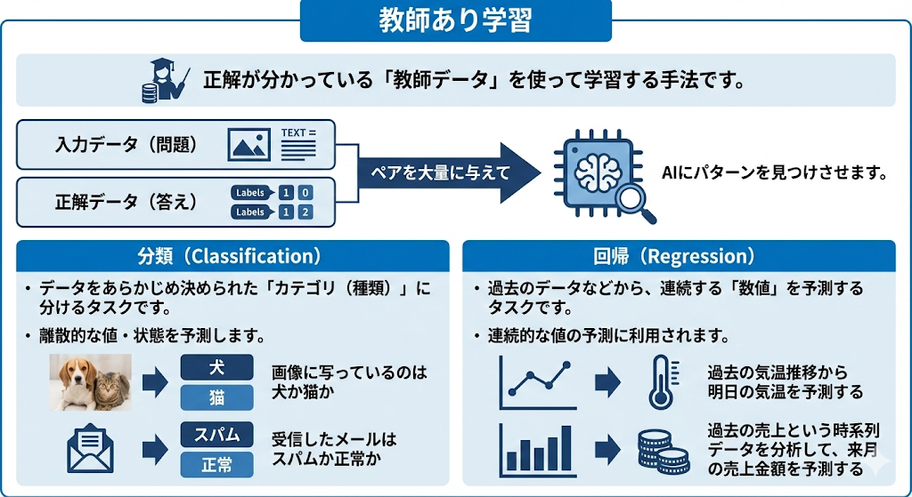
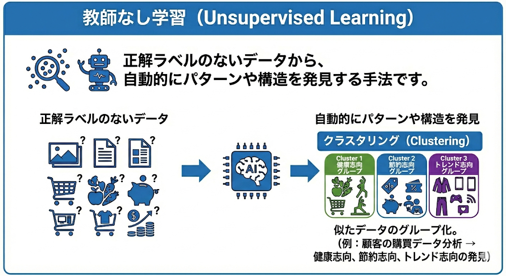

AIに知能をもたらす仕組み
🎯 AIに知能をもたらす2つの仕組み
AIに知能をもたらすための仕組みは、大きく分けて2つあります。
| 仕組み | 概要 |
|---|---|
| ① ルールベース | 人間が事前に作成したルールや知識に従って判断する |
| ② 機械学習 | データから自動的にパターンやルールを学び取る |
まずは「ルールベース」から見ていきましょう！
📏 1. ルールベース
ルールベース（Rule-Based AI）
人間が事前に作成したルールや知識をコンピュータプログラムに組み込み、AIはそれに従って予測や判断を行う仕組みです。
ルールベースAIの代表的な形がエキスパートシステムです。これは、特定の分野の専門家（エキスパート）の知識を「もし〇〇なら△△する」というIF-THENルールで表現し、コンピュータに判断させるシステムです。
IF-THENルールの例（医療診断）
- IF 体温が38度以上 AND 咳がある THEN → 「風邪の疑い」と診断
- IF 体温が38度以上 AND 発疹がある THEN → 「はしかの疑い」と診断
| メリット | デメリット |
|---|---|
|
|
❗ 試験でのひっかけポイント
「ルールベースAIはデータから自動的にルールを学習する」→ ×。ルールベースは人間が事前にルールを作成します。データから自動で学ぶのは「機械学習」の特徴です。この違いを明確に区別しましょう！
🧠 2. 機械学習の手法
機械学習（Machine Learning）
コンピュータが明示的にプログラムされることなく、データから自動的にパターンやルールを学び取る技術。AIに知能をもたらす中核的な技術です。
機械学習には主に4つの手法があります。それぞれ「データと正解をどのように与えるか」が異なります。
| 手法 | 概要 | たとえ |
|---|---|---|
| 教師あり学習 | 正解データ（教師データ）のペアを与えて学習 | 親が子供にライオンの写真を見せて「これがライオンだよ」と教える |
| 教師なし学習 | 正解を与えず、データ自体のパターンや構造を自己発見 | おもちゃのブロックを色や形で自分で分類する |
| 強化学習 | 「報酬」を設定し、目標達成のための最適な行動を学習 | ゲームでコインを取りモンスターを避ける試行錯誤 |
| 半教師あり学習 | 大量のラベルなしデータ＋少量のラベルありデータのハイブリッド | 少数の正解付き写真と大量の正解なし写真で学習 |
教師あり学習

正解が分かっている「教師データ」を使って学習する手法です。「入力データ（問題）」と「正解データ（答え）」のペアを大量に与えて、AIにパターンを見つけさせます。主に以下の2つのタスクで利用されます。
- 分類（Classification）： データをあらかじめ決められた「カテゴリ（種類）」に分けるタスクです。例えば、「画像に写っているのは犬か猫か」「受信したメールはスパムか正常か」といった離散的な値・状態を予測します。
- 回帰（Regression）： 過去のデータなどから、連続する「数値」を予測するタスクです。例えば、「過去の気温推移から明日の気温を予測する」「過去の売上という時系列データを分析して、来月の売上金額を予測する」といった連続的な値の予測に利用されます。
教師なし学習

正解ラベルのないデータの中から、自動的にパターンや構造を発見する手法です。代表的な手法としてクラスタリングと次元削減があります。
📊 クラスタリング（Clustering）
似たデータをグループ化する手法です。例えば、顧客の購買データを分析して「このグループは健康志向」「このグループは節約志向」といったパターンを自動で発見することができます。
📉 次元削減（Dimensionality Reduction）
データが持つ多くの特徴（次元）の中から、重要な情報を失わずにデータの次元数を減らす手法です。
次元削減とは？
たとえば、ある顧客データに「年齢・身長・体重・年収・購入回数・来店頻度…」など100個の情報（＝100次元）があるとします。次元削減は、これらの中から本当に重要な数個の特徴にまとめることで、データを扱いやすくする技術です。
次元削減の主な活用場面：
- データの可視化： 高次元データを2次元・3次元に降ろしてグラフで表現
- 前処理： 機械学習モデルに入力する前にデータを整理し、計算コストを削減
- ノイズの除去： 不要な情報を取り除き、モデルの精度を向上
| 手法 | 目的 | イメージ |
|---|---|---|
| クラスタリング | データを似たもの同士でグループ分け | バラバラの写真を「風景」「人物」「食べ物」に仕分け |
| 次元削減 | データの情報を保ちつつ特徴数を圧縮 | 100科目の成績を「文系力」「理系力」の2つに要約 |
❗ 試験でのひっかけポイント
次元削減は教師なし学習の手法です。「正解ラベルを使って次元を削減する」という記述があれば誤りです。次元削減はラベル（正解）なしで、データの構造だけから重要な特徴を抽出します。
強化学習
試行錯誤を繰り返し、報酬を最大化する行動を学ぶ手法です。「良い行動（報酬が得られる）」「悪い行動（罰を受ける）」というフィードバックを基に最適な行動パターンを学習します。
ゲームAI（囲碁のAlphaGoなど）や自動運転技術などに活用されています。人間が教えるのではなく、AI自身が経験から学ぶという点が特徴的です。
半教師あり学習
少量の「ラベルありデータ」と大量の「ラベルなしデータ」を組み合わせて学習するハイブリッド手法です。ラベル付け作業はコストがかかるため、全データにラベルを付けるのが難しい場合に有効です。
❗ 試験でのひっかけポイント
「大量のラベルありデータと少量のラベルなしデータ」と書かれていたら逆です！半教師あり学習は「少量のラベルあり＋大量のラベルなし」です。
半教師あり学習のメリット・デメリット
| メリット | デメリット |
|---|---|
|
|
🔍 3. ディープラーニングとニューラルネットワーク
ディープラーニング（深層学習）
人間の脳の神経回路（ニューラルネットワーク）を模した仕組みで、「入力層」「中間層（隠れ層）」「出力層」の複数の層から成る。中間層を何層にも深く（ディープに）したことで、複雑なパターンの学習が可能になった！
「特徴量」の抽出
従来の機械学習とディープラーニングの最大の違いは、データの特徴（着目すべきポイント＝特徴量）を「人間が教えるか」「AIが自ら見つけ出すか」の違いだ！
| 手法 | 特徴量（データの特徴）の扱い |
|---|---|
| 従来の機械学習 | 人間が手動で設定する |
| ディープラーニング | 大量のデータからAI自身が自動的に抽出・学習する |
AIの画像認識プロセスと重み
AIが画像を認識する際、「ピクセル分割」→「数値化」→「特徴抽出」→「認識」というステップを踏む。
重み（Weight）と 重み付け（Weighting）
ニューラルネットワーク内のノード間の接続の強さを「重み」と呼ぶ。重要な情報を優先的に処理するためにこの強さを調整することを「重み付け」と言うぞ！人間の脳のシナプスの強弱みたいなものだ！
例えば、「ライオン」を認識する時、「たてがみ」という情報には大きな重みが、背景の色には小さな重みがつけられる。この調整（学習）を繰り返すことで正確な認識ができるようになるんだ。
⚠️ 4. 過学習（オーバーフィッティング）の回避
過学習（Overfitting）
モデルが訓練データに過度に適合してしまい、新しいデータに対する予測精度が低下する現象。
たとえると、「教科書の問題を丸暗記したが、初見の問題は解けない」という状態と同じです。汎化能力（未知のデータにも対応できる力）が低い状態を指します。
過学習を回避するために、以下の手法が使われます：
| 手法 | 説明 |
|---|---|
| 早期終了（Early Stopping） | 検証データでモデルの性能を定期的にチェックし、最適なタイミングで学習を停止する |
| 正則化（Regularization） | モデルの複雑さを制限するためにパラメータを調整し、ノイズの過剰な学習を防ぐ |
| ドロップアウト（Dropout） | 学習中にランダムにいくつかのニューロンを無効化し、汎化性能を向上させる |
🔄 5. 転移学習（Transfer Learning）
転移学習（Transfer Learning）
あるタスクで学習した知識を、異なるが関連するタスクに応用する手法。
例： 動物の認識で学んだ知識を使って、植物の認識を素早く学習する。
転移学習のメリット：
- 少ないデータで学習可能： 既存の知識を活用するため、新たなタスクに必要なデータ量を大幅に削減できる
- 学習時間の短縮： ゼロから学習するより圧倒的に早く学習が完了する
- 高い精度： 事前学習済みのモデルが持つ豊富な特徴表現を活用できる
たとえると、英語を知っている人がドイツ語を学ぶとき、英語の知識（文法構造や単語の類似性）がのおかげで学習が早くなるのと同じ仕組みです。「知識の流用」がポイントです。
✅ 確認問題（○×形式）
問題1: ルールベースAIは、人間が事前に作成したルールや知識に従って判断を行う仕組みであり、データから自動的にルールを学習するわけではない。
問題2: エキスパートシステムは、ルールベースAIの代表的な形であり、専門家の知識をIF-THENルールで表現して判断を行うシステムである。
問題3: 教師あり学習とは、正解データ（教師データ）のペアを与えて、データのパターンを学習する手法である。
問題4: 教師なし学習は、正解データを与えずに、データ自体のパターンや構造を自己発見する手法である。
問題5: 強化学習では、「報酬」を設定し、試行錯誤を通じて最適な行動を学習する。自動運転技術にも活用されている。
問題6: 半教師あり学習のデメリットとして、教師あり学習に比べて予測精度が不安定になる可能性がある。
問題7: 「重み付け」とは、ニューラルネットワークにおいて重要な情報を優先的に処理するために接続の強さを調整するプロセスである。
問題8: ドロップアウトとは、モデルの複雑さを制限するためにパラメータを調整する手法である。
問題9: ディープラーニングは、従来の機械学習とは異なり、データが持つ特徴（特徴量）を人間が手動で設定する必要がなく、AI自身がデータから自動的に抽出する。
📝 まとめ
- ルールベース： 人間が作成したルール（IF-THEN）に従って判断。エキスパートシステムが代表例
- 教師あり学習： 正解データのペアから学習。分類・回帰に応用
- 教師なし学習： 正解なしでパターンを自己発見。クラスタリング等
- 強化学習： 報酬最大化のための試行錯誤。自動運転等に活用
- 半教師あり学習： ラベルあり＋なしのハイブリッド。コスト削減可能
- ディープラーニング： 特徴量をAIが自動で抽出・学習（入力層/中間層/出力層）
- 重み・重み付け： ニューラルネットワークの接続強度の調整
- 過学習回避： 早期終了、正則化、ドロップアウトの3手法
- 転移学習： ある分野の学習知識を別分野に応用